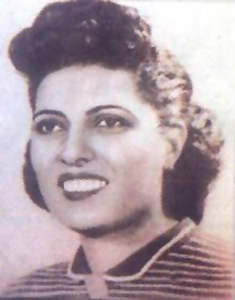

من قرية سنبو الكبرى إلى طريق العلم
في 3 مارس 1917، وُلدت سميرة موسى في قرية سنبو الكبرى، التابعة لمركز زفتى بمحافظة الغربية. ومنذ طفولتها، أظهرت اهتمامًا بالقراءة والتعلّم. ثم انتقلت مع أسرتها إلى القاهرة، حيث واصلت دراستها في مدارسها، ومنها مدرسة قصر الشوق ومدرسة بنات الأشراف.
كانت سميرة متفوقة، لكن اختيارها لم يكن مجرد البحث عن وظيفة مرموقة. فقد أصرت على الالتحاق بكلية العلوم بجامعة فؤاد الأول، التي أصبحت لاحقًا جامعة القاهرة، رغم أن درجاتها كانت تتيح لها خيارات دراسية أخرى. وفي ذلك الوقت، لم يكن من المعتاد أن تصل النساء إلى مواقع علمية جامعية متقدمة.
تخرجت عام 1939 بتفوق، بعد دراسة موضوعات مرتبطة بالأشعة السينية وتأثيرها في المواد. وكان عالم الفيزياء المصري علي مصطفى مشرفة من الشخصيات العلمية التي أثرت في مسيرتها. وقد عُيّنت سميرة في الجامعة، ثم أصبحت من أوائل النساء اللاتي شغلن منصبًا أكاديميًا في كلية العلوم؛ وهو إنجاز فتح الباب أمام حضور أكبر للنساء في البحث والتدريس الجامعي.
